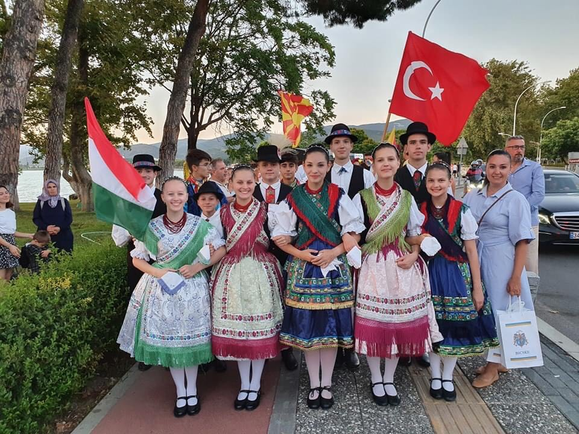
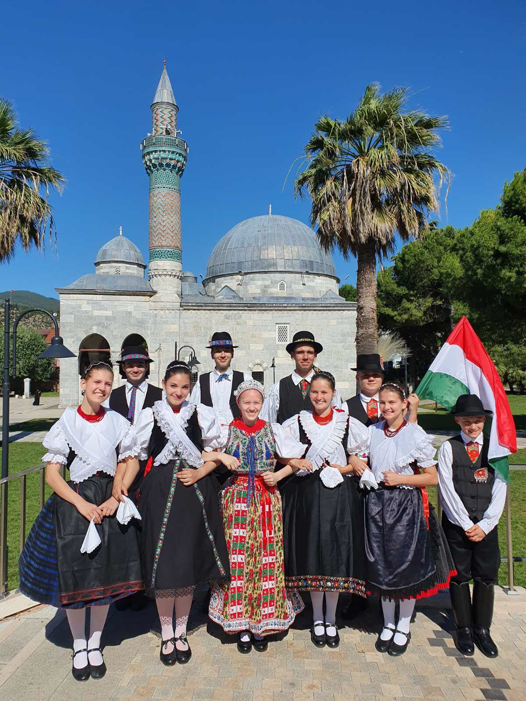

|
|
|
|
| Education | Gallery | About us | Contact |
| Iznik Folklore
Festival
19-23. July, 2022.: We travelled to the city of Iznik, Turkey to an International Music and Folklore Festival. We represented our country with 5 pairs of dancers.
There were street parades and several
performances every day.

The art director of the Macedonian group participating in the festival has appreciated our performance, and as a result we have been invited to the youth folklore festival which will be held in Macedonia next year. Our dancers have made international friendships, they have spent most of their freetime with fellow Macedonian and Turkish dancers. All participants of the festival have been open to getting to know each other's culture.

Besides the professional tasks, the group have gained lots of cultural experiences. We tasted a colorful palette of local dishes, from the salty and sour Ayran to the mellifluent baklava. We have spent a whole day in Istanbul, which provided a great experience with its architectural wonders and bazaars.
Our supporters: Bálint Istvánné Andrea, Pallagi Tibor, Tácsik Attila, Nagyegyházi Baràti Kör Közhasznú Egyesület, Csizmadia Zsuzsanna, Herceghalmi Gyermekeiért Közhasznú Alapítvány. |
|
© Mayer Néptáncműhely, 2022 - 2023 info@mayerneptancmuhely.hu KÁ |